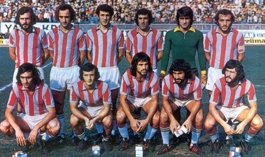

TarihçeTrabzonspor tarihi üzerine yapılan çalışmaların birçoğu, hikâyeyi 1967’den değil, çok daha eskilerden başlatır. Bordo-Mavi renklere sahip Karadeniz Fırtınası, 2 Ağustos 1967 günü resmi olarak kurulmuştur; ancak kentin spor geçmişi 20. yüzyılın başlarına dek uzanır. Kentte yaşayan yabancı ülke temsilcilerinin (O tarihlerde Trabzon’da 12 ülkenin konsolosluğu vardır!) ve gayrimüslim tebaanın önderliğinde başlayan spor faaliyetleri kısa bir süre sonra Türk gençlerinin de ilgisini çekmeye başlamıştır. 1911’de kurulan İdmanyurdu, savaş nedeniyle pek uzun ömürlü olamasa da Trabzon’da Türklerin kurduğu ilk spor kulübü olarak tarihteki yerini almıştır. Trabzon’un ileri gelen ailelerine mensup Türk gençleri, 1920’li yılların başında kentin sportif ve kültürel hayatına uzun yıllar damgasını vuracak İdmanocağı, İdmangücü ve Necmiati gibi kulüpleri kuracaklardı. İşte Trabzonspor 1967 yılında dünyaya geldiğinde, aslında yarım asırlık bir sportif, kültürel ve kurumsal bir mirası devralacaktı. |

|
BaşarılarKaradeniz Fırtınası, 1975-1985 yılları arasında toplamda 6 lig şampiyonluğu, 6 Cumhurbaşkanlığı Kupası, 3 Türkiye Kupası ve 3 Başbakanlık Kupası’nı müzesine götürmeyi başardı. 1980’li yılların ortalarından itibaren gerek kulüp içinde gerek Türk futbolunda yaşanan gelişmeler Bordo-Mavililer’i şampiyonluktan 2010-11 yılına kadar alıkoydu belki; ama Trabzonspor zirveye oynamaktan asla vazgeçmedi. Müzesindeki Türkiye Kupası sayısını 8’e; Cumhurbaşkanlığı Kupası’nı 7’ye; Başbakanlık Kupası’nı 5’e çıkarmasını bildi. Tarihinde ilk defa 2009-2010 sezonunda TFF Süper Kupa’yı kazanmanın onurunu yaşadı. 15 Eylül 1976 günü Akranes galibiyeti ile başlayan Avrupa serüveninde Liverpool, Aston Villa, Inter, Barcelona ve Olympique Lyon gibi unutulmaz zaferlere imza attı. Trabzonspor kuruluşunun 50. yılında, nice zafere ev sahipliği yapmış ve şehrin futbol mabedi haline gelmiş Hüseyin Avni Aker Stadyumu’na veda ederek maçlarını Akyazı’daki yeni stadyumunda oynamaya başladı. Yeni stadyumunda yakaladığı ivmenin sonucu olarak uzun bir aradan sonra 2019-2020 sezonunda Türkiye Kupası ve Süper Kupa’yı müzesine götürmeyi başardı. Trabzonspor, 55 yıllık mazisi boyunca kimi zaman dramatik kaybedişlerin kimi zaman sarsıcı başarı ve unutulmaz galibiyetlerin takımı oldu. Ama her dönem ve koşulda bir spor kulübünden çok daha fazla şeyi temsil ediyordu. Kemençeden tuluma, horondan kolbastıya, hamsisi, şivesi ve hırçın doğasıyla Karadeniz’e dair pek çok folklorik ve kültürel sembolün taşıyıcısı ve ulusal düzeyde sergilendiği zemindi Trabzonspor. Bu, şüphesiz ki onu diğer kulüplerden ayıran en belirleyici özelliklerden biriydi. Diğeri mi? Her zaman umudun; inadın; inanç, mücadele ve sevdanın takımı olması… |
 |


Gol Krallarımız
Trabzonspor tarihinde 5 gol kralı çıkardı. Bunlardan biri hem ikinci lig, hem de birinci ligde bu başarıya imza atmış Necmi Perekli, ikincisi Gürcü golcü Şota Arveladze, üçüncüsü Fatih Tekke, dördüncüsü Burak Yılmaz, beşincisi Alexander Sörloth'dur.
1968/69 tarihinde 2. lig Kırmızı Grup’ta mücadele eden Trabzonspor, İzmirspor’un şampiyon olduğu ligi 6. sırada tamamladı. Ancak Nemci Perekli 22 gol atarak krallık tacını giydi. Perekli bir sezon sonra da 20 gol atarak ikinci kez gol kralı oldu.
Perekli; Giresunspor, Beşiktaş ve Altay maceralarından sonra döndüğü Trabzonspor’un ikinci kez şampiyon olduğu 1976/77 sezonunda 22 maçta attığı 18 golle bordo-mavili ekibin Birinci ligdeki ilk gol kralı oluyordu.
Bu tarihten uzun yıllar sonra, yani 1995/96 sezonunda Trabzonspor şampiyonluğu kıl payı kaçırdı ama, Gürcü oyuncu Şota Arveladze ile teselli buldu. Çünkü Şota oynadığı 34 maçta rakip filelere 25 gol gönderme başarısı gösterdi.
Trabzonspor tarihindebeş gol kralı çıkarabildi.Hami Mandıralı iseTrabzonspor forması altında attığı toplam 273 golle (Türkiye Spor Toto Süper Lig, Kupa Galipleri Kupası, Türkiye Başbakanlık Kupası, Türkiye Süper Kupa, Türkiye Kupası, UEFA Avrupa Ligi) Bordo-Mavili ekibimizin en çok gol atan oyuncusu unvanını kazandı.
Trabzonspor alt yapısından yetişen Hami Mandıralı 1985-2002 yılları arasında (1998/99 döneminde Almanya’nın Schalke 04 takımında oynadı) attığı 273 golün birçoğunu frikikten kaydederek haklı olarak “bombacı” unvanını da kazandı. Hami Trabzonspor’un Avrupa kupalarında en fazla gol atan oyuncusu oldu.
Mandıralı 2002 sezonunda Trabzonspor’dan ayrıldı. Hami halen Türkiye liginde Tanju Çolak ve Hakan Şükür'den sonra en çok gol atan 3. futbolcudur.
Takımımızın bir diğer gol kralı ise Fatih Tekke'dir. 2004-2005 Sezonunda 31 gole imza atan Fatih Bordo-Mavili forma altında krallık unvanını taşıyan 3. futbolcu olarak tarihe geçti. Fatih 2006-2007 sezonu başında Rusya'nın Zenit St.Pettersburg takımına transfer oldu.
Takımımızın bir diğer gol kralı ise Burak Yılmaz'dır. Burak Yılmaz 33 golle 2011-2012 sezonunu gol kralı olarak tamamladı. Ayrıca Burak bu performansıyla bir sezonda en fazla gol atan futbolcumuz unvanını da eline aldı.
Spor Toto Süper Lig ve Süper Final’de toplam 34 maçta forma giyen ve 33 gol kaydeden Burak kulübümüz tarihindeki dördüncü gol kralı olmayı başardı.
Kulübümüzün son gol kralı ise Norveç’li Alexander Sorloth oldu. Süper Lig’de 2019 – 2020 sezonunda oynadığımız 34 maçın 34’ünde de forma giyen Sorloth, sezon boyunca 24 kez fileleri havalandırarak kulübümüzün beşinci gol kralı olarak tarihe geçti.
Sorloth aynı zamanda 2019 – 2020 sezonunda oynadığımız Süper Lig, Türkiye Kupası ve UEFA Avrupa Ligi maçlarında toplamda 49 maçta forma giydi. Bu karşılaşmalarda ise Sörloth, 33 gol ve 10 asiste imza attı.